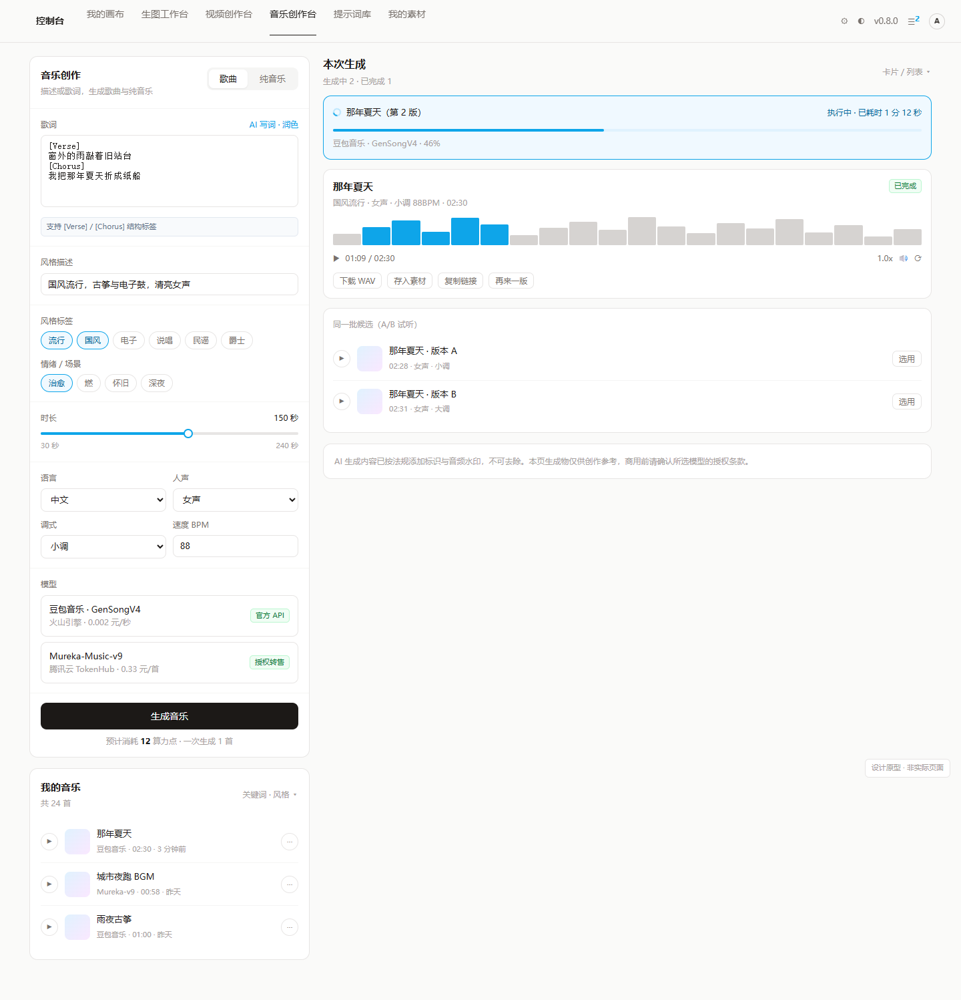
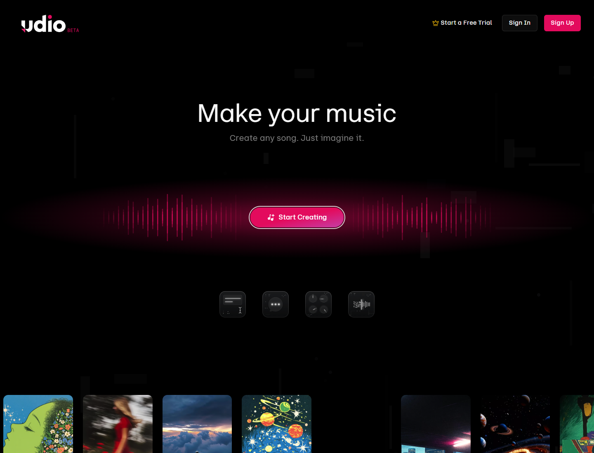
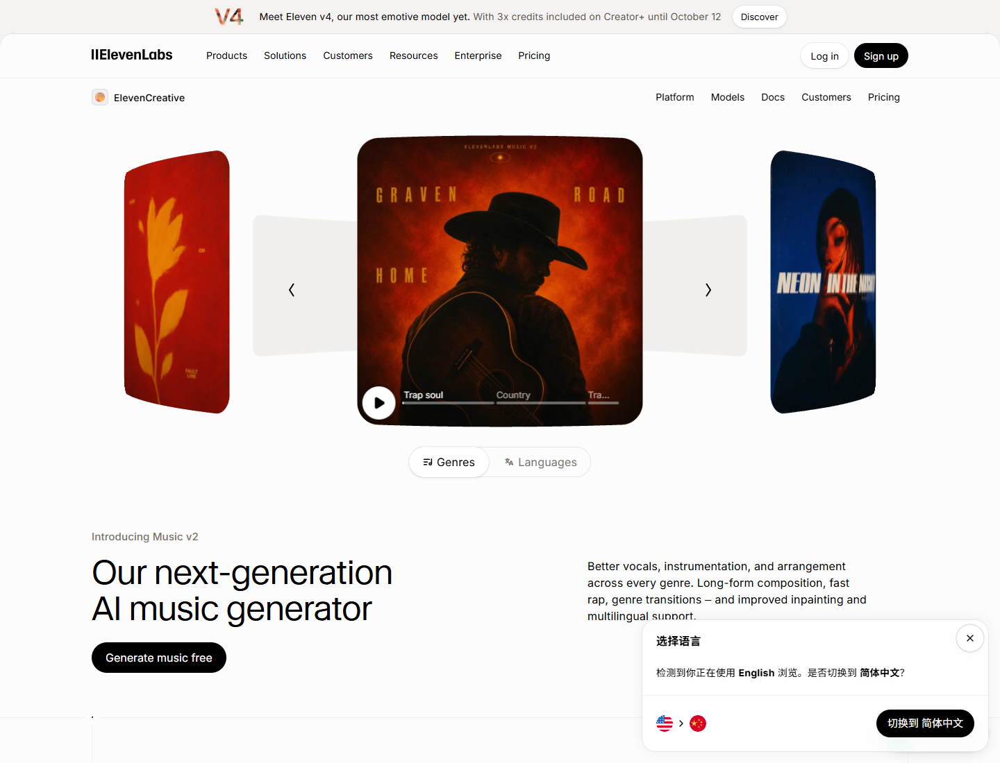
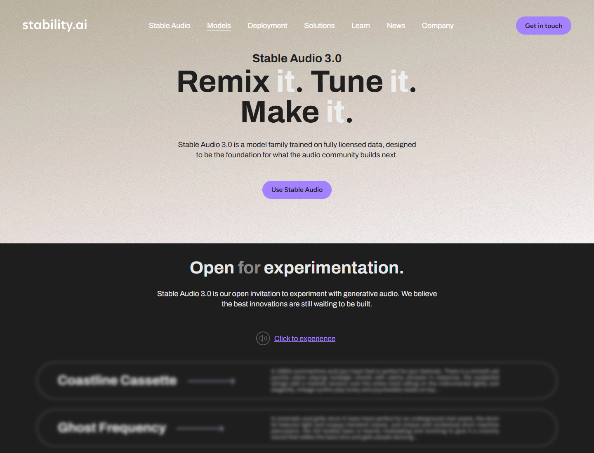
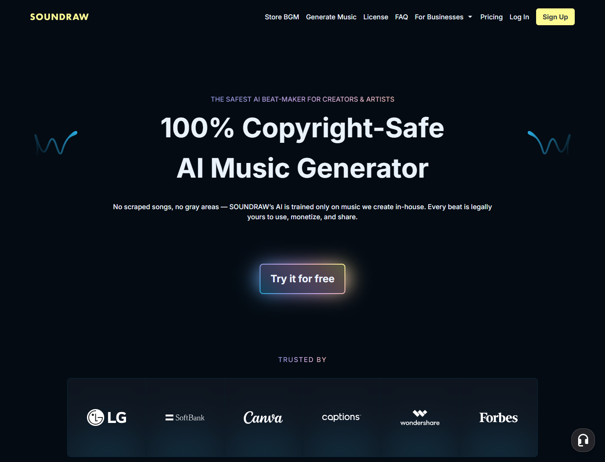
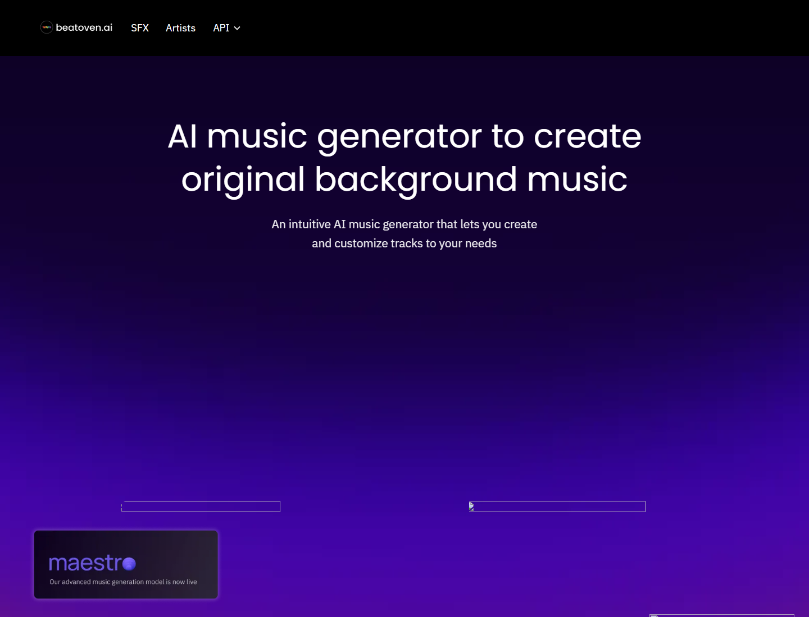
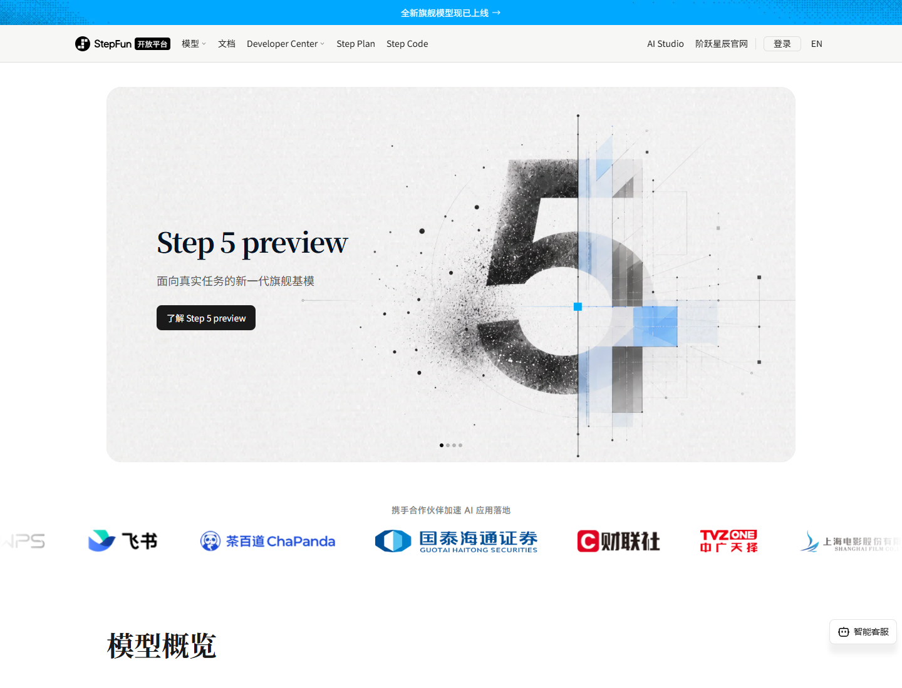
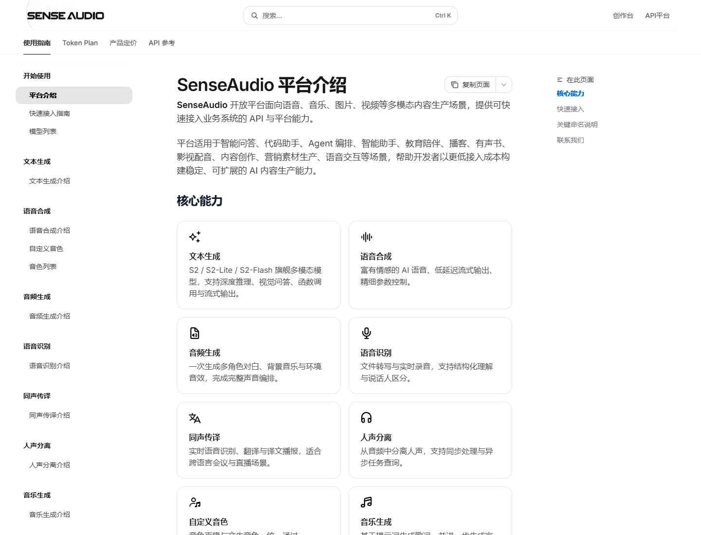
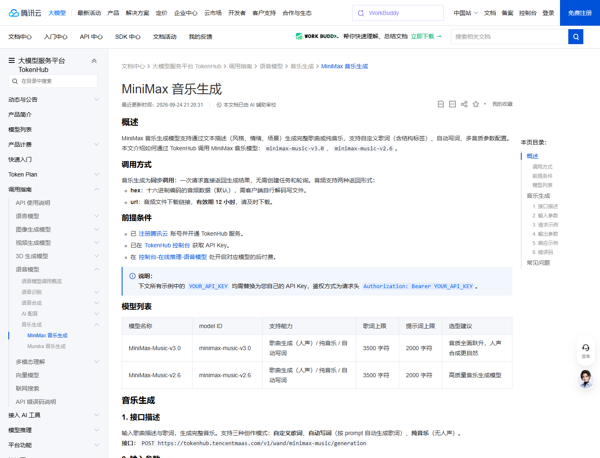
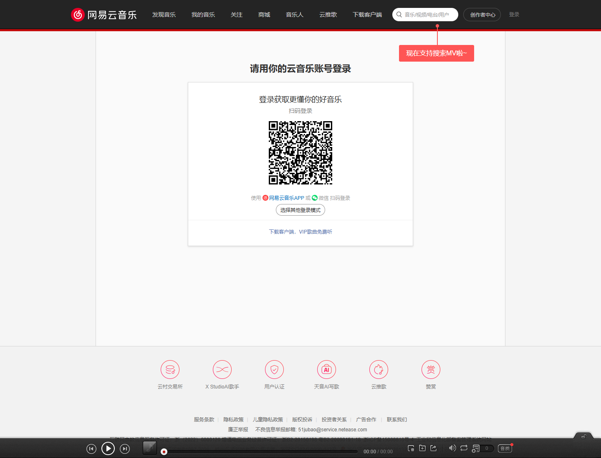

左/上是我们的设计原型（静态 HTML 渲染，非实际页面）；竞品部分为各家官网落地页截图。
同一页面的两种模式，演示「参数区能力驱动」：切到纯音乐后时长上限自动降为 60 秒、歌词输入消失、人声置灰。

按调研中的定位分组；仅作视觉参考。









这一节才是选型依据：创作台截图看不到的东西，都在这里。
| 能力 | Suno / Udio | 火山豆包音乐 | 腾讯 TokenHub | Mureka | 纯音乐类 (ElevenLabs / Stable Audio / Mubert) | 我们的原型 |
|---|---|---|---|---|---|---|
| 官方自助 API | 无 仅邀请制 / 明确不提供 | 有 | 有 | 有 | 有 | 按渠道配置 |
| 描述生成歌曲 | 有 | 有 | 有 | 有 | 无（纯音乐） | 有 |
| 自定义歌词 | 有 | 有 | 有 | 有 | 无 | 有 |
| 纯音乐模式 | 有 | 独立 Action | flag | 独立接口 | 主打 | 有 |
| 时长控制 | 10–360s | 歌曲 30–240s 纯音乐 30–120s | 未公开 | 未公开 | Mubert 15–1500s | 按模型能力切换 |
| 参考音频 / 翻唱 | 有 | 无 | 无 | 音色克隆 | 部分 | 二期 |
| 续写 Extend | 有 | 无 | 无 | 有 | 无 | 二期 |
| 分轨 Stems | Suno 有 / Udio 已禁 | 无 | 无 | 有 | Mubert/Beatoven | 二期 |
| BPM / 调性控制 | 无（只能读） | 有 Key/Kmode/Tempo | 无 | 未公开 | 写进 prompt | 有 |
| 歌词生成 | 内置 | 独立 GenLyrics | lyrics_optimizer | 有 | 无 | 有 |
| 单次候选数 | 2 首 | 1 首 | 1 首 | 未公开 | Stable/ElevenLabs 多版 | A/B 试听 |
| 单价 | 订阅制，按次 | 0.002 元/秒 | 1 / 0.25 / 0.33 元/首 | 官方未公开 | $0.26/次起 | 折算成算力点 |
| 商用授权清晰度 | 诉讼未决 | 生成式条款+SLA | 腾讯云条款 | FAQ 明确可商用 | 逐家不同 | 页面明示+水印 |
| 国内可长期使用 | 中转将断供 | 是 | 是 | 是 | 需国际网络 | 渠道分级 |
| 调研发现 | 原型中的体现 |
|---|---|
| 各模型参数集不同（纯音乐有 flag / 独立 Action 之分，时长上限不同） | 参数区能力驱动：切换模式即时改变时长区间与可见字段，并在超限时给出提示条 |
| 渠道存在官方 / 授权转售 / 逆向三级 | 模型卡片带 官方 API / 授权转售 徽标 |
| 计费口径三种（元/秒、元/首、元/百万 tokens） | 模型卡片统一显示折算单价，底部统一显示「预计消耗 N 算力点」 |
| 上游 URL 有效期 12h / 24h / 7 天不等 | 结果卡提供「下载 WAV / 存入素材」，产物由后端转存自有存储 |
| AI 标识与音频水印是合规硬要求 | 结果区底部固定合规声明，明确水印不可去除 |
| 单次候选可多版对比 | 「同一批候选（A/B 试听）」区块，逐条「选用」 |